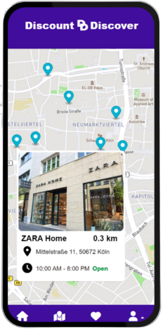
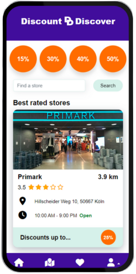
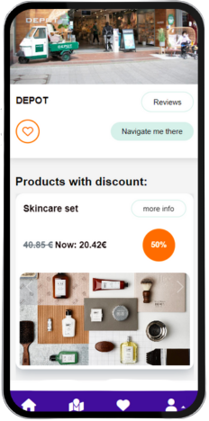
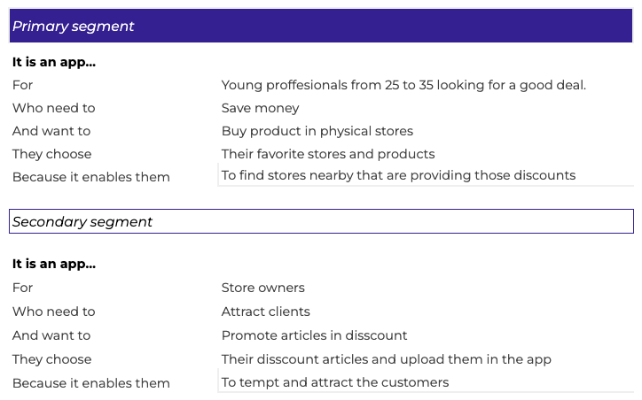
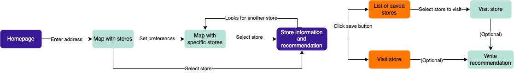

Discount Discover is a web application created for students and people who like to make the most of their finances.
With our solution, we want to provide the user with accurate information about the latest discounts in their surroundings.




Product pitch
In this phase we defined who are the primary and secondary users, their needs and the solution we are proposing.
In this stage the three team members including the product owner brainstorm to define this segments.
Core user journey
After setting our segment, we defined all the tasks and steps he/she needed to: search and find a store based on her needs, save it to its favorites and
when ready start the navigation to this store.
User flow
In this step we define briefly which screens we will need to build our MVP

UI Kit
After our User experiences is completed, we started to create our UI lo-fi components in Figma.
For this task, we use the web application size, which in our case was mobile size.
Wireframe & Prototype
Finally, we created a wireframe and chose the final color palette. For the prototype, we finally added the color and created most of the possible interactions and flows. Hier our recently updated demo version.
Role in the project
For this project we worked as a team and we all participated in the backend and frontend developer tasks. However my main tasks where:
Create the wireframe
Develop the hi-fi prototype in Figma
Set daily brieffings and define the tasks for everyone on the team
Implementation and adjustment of the UI to the final application